The Union Budget 2026-27 represents a decisive maturation of the Indian energy transition, signaling a shift in the center of gravity from simple capacity addition to a comprehensive, technology-led industrial strategy designed to secure a resilient, low-carbon future. Presented against a backdrop of resilient macroeconomic fundamentals, the budget integrates climate action into the core of national economic planning, framing the transition as a multi-trillion-dollar opportunity for industrial growth and employment.
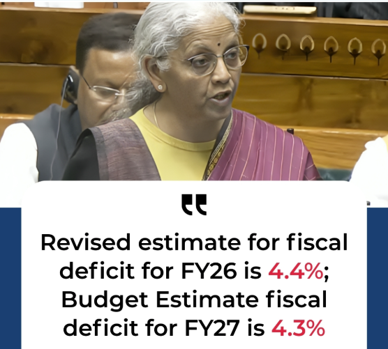
With the fiscal deficit targeted at 4.3% of GDP for FY27, the government has maintained a fine balance between fiscal discipline and aggressive public capital expenditure, which has been raised to ₹12.22 lakh crore. This fiscal framework is essential for providing the stability required to attract the estimated $400 billion in investment needed to reach India's target of 500 GW of non-fossil fuel capacity by 2030.
In the energy domain, these duties translate into a massive infusion of capital into the Ministry of New and Renewable Energy (MNRE), which saw its total outlay rise to ₹32,914.67 crore—a nearly 24% increase from the previous fiscal year. This allocation is not merely a subsidy for green power; it is a strategic investment in long-term productive capacity, aiming to decouple Indias economic expansion from its carbon footprint while securing its energy sovereignty.
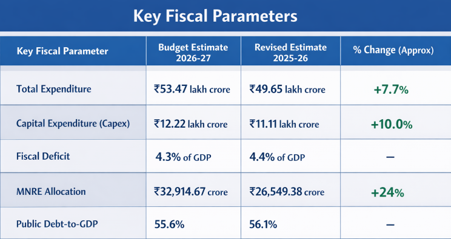
Central to this strategy is the recognition that the next phase of growth depends on solving the invisible challenges of the energy ecosystem: intermittency, grid instability, and the decarbonization of hard-to-abate industrial sectors. The budget addresses these through a coordinated policy mix that includes significant funding for energy storage, a landmark mission for Carbon Capture, Utilization, and Storage (CCUS), and a comprehensive overhaul of the manufacturing value chain.
By restructuring major public sector financial institutions like the Power Finance Corporation (PFC) and the Rural Electrification Corporation (REC), the government intends to achieve the scale and efficiency necessary to fund large-scale renewable infrastructure, effectively turning these non-banking financial companies (NBFCs) into the primary engines of the green credit cycle.
The Solar Pillar: Decentralization and Agrarian Autonomy
Solar power is projected to lead the progress toward the 500 GW target, and the budget earmarks over 80% of the MNRE’s total outlay for two flagship programs: the PM Surya Ghar Muft Bijli Yojana and the PM-KUSUM scheme.
PM Surya Ghar Muft Bijli Yojana: Household Energy Independence
The PM Surya Ghar scheme received a substantial allocation of ₹22,000 crore, a 10% increase from the previous year's budget estimate and a 29% rise from the revised estimates for FY26. This program targets the installation of rooftop solar systems in 10 million households, offering up to 80% subsidy and providing 300 units of free power monthly to beneficiaries.
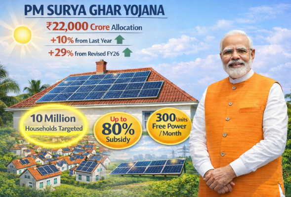
The mechanism of implementation has been streamlined through a national online portal that handles applications, approvals, and subsidy transfers, with funds often credited to accounts within 30 days of installation. As of late 2025, nearly 24 lakh households had already registered, generating approximately 7 GW of clean power. The budgets increased funding provides the long-term visibility required for companies like SolarSquare and TATA Power to expand their market presence and technological capabilities.
PM-KUSUM: Solarizing the Agricultural Backbone
The budget nearly doubled the outlay for this program to ₹5,000 crore, up from ₹2,600 crore in the previous year. PM-KUSUM focuses on three components: installing small solar power plants on fallow or pasture land (Component-A), installing standalone solar agricultural pumps (Component-B), and solarizing grid-connected agricultural pumps (Component-C).
By the end of 2025, over 9.42 lakh standalone solar pumps and 10.99 lakh grid-connected pumps had been solarized, marking a significant milestone in rural energy security. The 92% increase in funding in Budget 2026 is intended to accelerate this trajectory, particularly in regions where grid connectivity is weak or diesel-powered pumps remain prevalent.
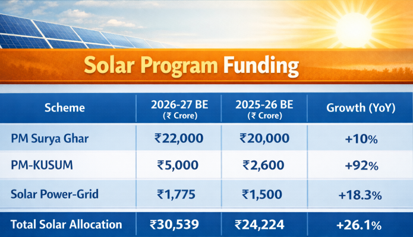
Energy Storage: The Critical Enabler of Grid Stability
As India’s renewable energy capacity surpasses the 200 GW milestone, reaching 52.15% of total installed capacity by November 2025, the central challenge has shifted from installation to integration. Budget 2026-27 addresses this by prioritizing two primary technologies: Battery Energy Storage Systems (BESS) and Pumped Storage Hydropower (PSP).
Battery Energy Storage Systems (BESS) and Manufacturing Depth
The budget recognizes BESS as essential for short-duration grid balancing and meeting evening peak demand. To lower the capital expenditure (CAPEX) for grid-scale storage projects, the Finance Minister extended the Basic Customs Duty (BCD) exemption on capital goods used for manufacturing lithium-ion cells for batteries used in BESS. Previously, these exemptions were primarily available for electric vehicle (EV) battery manufacturing; the extension to BESS provides a uniform fiscal environment for the battery ecosystem.
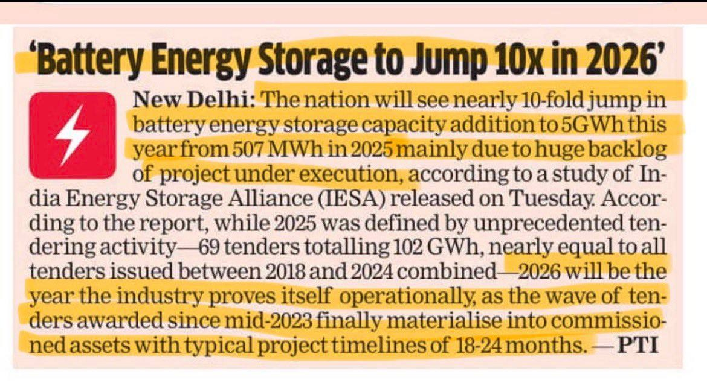
This duty relief is complemented by the addition of 35 capital goods for battery manufacturing to the duty-exempt list, aiming to reduce the cost of setting up domestic assembly lines. The industry expects battery storage capacity to jump from 507 MWh in 2025 to 5 GWh by the end of 2026. The Central Electricity Authority (CEA) has estimated a requirement for 336 GWh of energy storage capacity by 2029-30 to facilitate reliable renewable integration. By reducing the landed cost of cells and manufacturing equipment, the budget improves the bankability of standalone storage tenders, which have historically faced challenges due to high battery costs.
Pumped Storage Hydropower (PSP) and Long-Duration Solutions
While batteries are effective for 2–4-hour storage, PSPs are critical for meeting extended demand periods and multi-hour storage needs. PSPs utilize surplus renewable energy to pump water to an upper reservoir during off-peak hours, releasing it through turbines during peak demand. Budget 2026 reinforces the policy framework for PSPs by continuing the 100% waiver of Inter-State Transmission System (ISTS) charges for projects awarded construction before June 30, 2028.
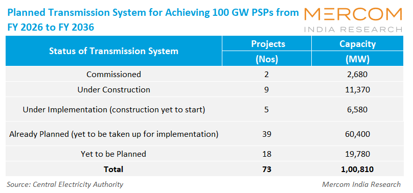
The CEA roadmap projects India's total storage capacity to reach 62 GW by 2030, with PSPs serving as a cleaner, more durable alternative to thermal baseload plants.
Grid-Forming Technologies and Ancillary Services
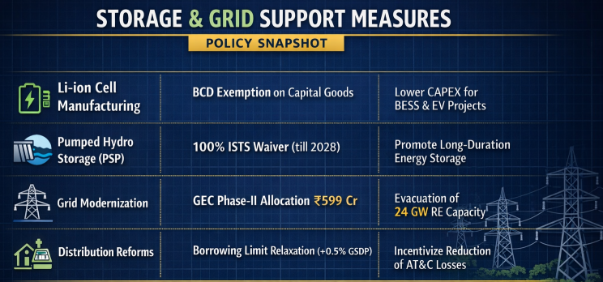
Strategic Value Chains: Critical Minerals and Manufacturing Sovereignty
A cornerstone of Budget 2026-27 is the pursuit of Aatmanirbharta or self-reliance in the clean-tech value chain, addressing the raw material vulnerabilities that could constrain India's 2030 ambitions.
The Critical Mineral Mission and Rare Earth Corridors
To reduce dependence on imported raw materials—particularly from dominant suppliers like China—the government has fully exempted customs duties on 25 essential minerals, including lithium, cobalt, and rare earths. These minerals are fundamental to the production of high-efficiency solar cells and permanent magnets for wind turbine generators. Furthermore, the budget proposes the establishment of Dedicated Rare Earth Corridors in Odisha, Kerala, Andhra Pradesh, and Tamil Nadu. These corridors are intended to support the full value chain from mining and refining to the final manufacturing of precision equipment.
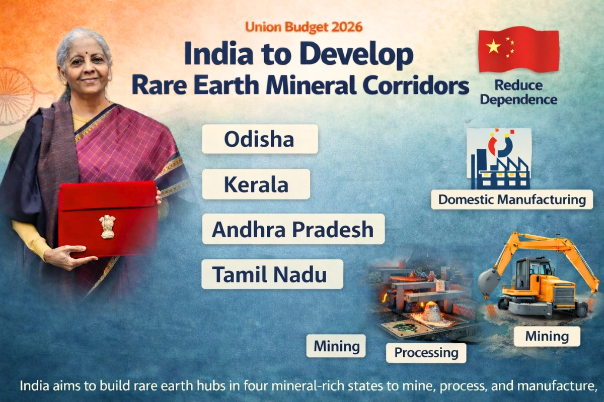
By incentivizing the processing of lithium and nickel with a capital subsidy of approximately 15%, the government aims to build domestic refining capacity, ensuring that India captures a larger share of the value-added manufacturing process.
National Manufacturing Mission (NMM) and Clean-Tech Scaling
The proposed National Manufacturing Mission (NMM) identifies clean-tech as a priority sector, encompassing solar cells, wind turbines, electrolyzers, and grid-scale batteries. The budget rationalizes customs duties to correct inverted duty structures—where raw materials were taxed higher than finished products—thereby improving the cost competitiveness of domestic module makers. Effective duties on solar modules have been reduced to 20%, while the BCD on sodium antimonate (a key input for solar glass) has been eliminated.
A significant policy shift accompanies these fiscal measures: starting in June 2026, all clean energy projects must utilize solar photovoltaic modules made from domestically produced cells. This mandate, combined with the extension of the PLI scheme for solar manufacturing with an increased allocation of ₹24,000 crore, aims to establish 65 GW of fully integrated solar manufacturing capacity. This move is designed to foster a domestic ecosystem that is insulated from global supply shocks and pricing volatility.
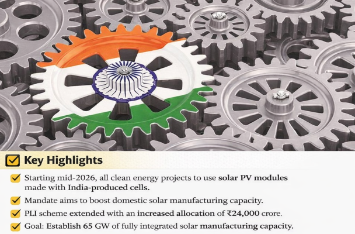
Skilling for the Green Economy
The scale of the 500 GW target necessitates a massive workforce of certified professionals capable of building and operating complex renewable assets. The budget prioritizes outcome-driven skilling through the creation of Centres of Excellence and regional hubs for skill development in emerging sectors like green hydrogen and storage.
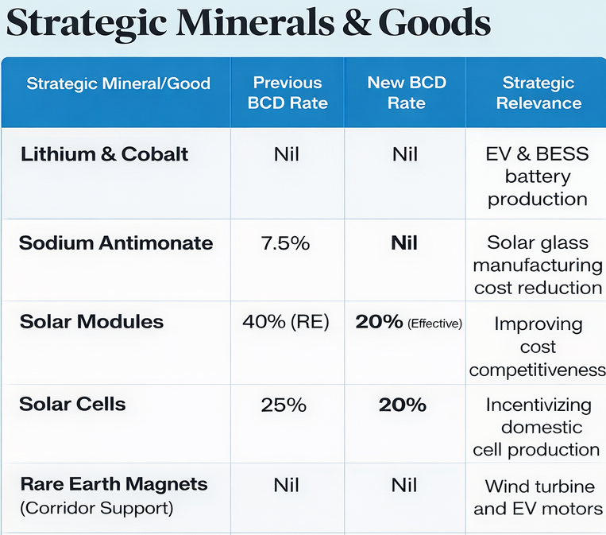
Hard-to-Abate Decarbonization: CCUS and Green Hydrogen
One of the most innovative aspects of Budget 2026 is the explicit fiscal roadmap for the decarbonization of energy-intensive industries. While solar and wind address the power grid, sectors like steel, cement, and chemicals require specialized technological interventions.
The Carbon Capture, Utilization, and Storage (CCUS) Mission
The budget introduces a landmark ₹20,000 crore incentive scheme for Carbon Capture, Utilization, and Storage (CCUS) technologies over a five-year period. CCUS is an essential tool for high-emission industries to meet Net Zero targets without compromising their productive capacity. The government has initially allocated ₹500 crore for the 2026-27 financial year to initiate pilot projects across five sectors: power, steel, cement, refineries, and chemicals.
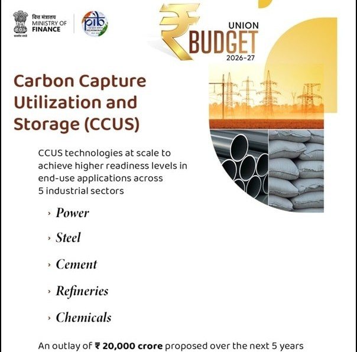
The National Green Hydrogen Mission (NGHM)
The National Green Hydrogen Mission (NGHM) received ₹600 crore in the current budget, which represents a doubling of the revised funding from the previous fiscal year. While the mission has a total allocation of over ₹19,000 crore until 2030, the FY27 budget focuses on the implementation phase: disbursing incentives for electrolyzer manufacturing and green hydrogen production as awarded capacities become operational.
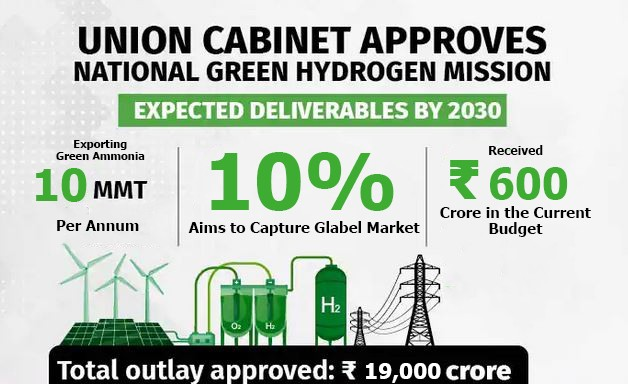
Green hydrogen is expected to become cost-competitive in Phase II (2026-2030), with commercial-scale projects emerging in shipping, mobility, and steel production. The mission also aims to capture 10% of the global market for green hydrogen and its derivatives like green ammonia, potentially exporting 10 MMT per annum.
Nuclear Energy and Baseload Diversification
The budget extends customs duty exemptions for nuclear power project imports until 2035 and opens the door for private sector participation in Small Modular Reactors (SMRs). The target of reaching 100 GW of nuclear power capacity by 2047 reflects a long-term strategy for energy security. The National Nuclear Energy Mission focuses on developing indigenous 700 MW reactors and international cooperation for 1000 MW units, with capacity projected to rise to 22.38 GW by 2031-32.
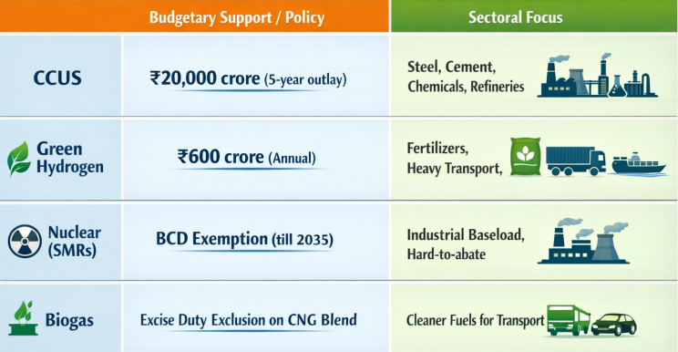
Infrastructure and Financial Engineering: Crowding in Private Capital
The achievement of 500 GW capacity by 2030 requires an estimated investment of ₹33 lakh crore ($400 billion). Given that current investment levels remain below the scale required, Budget 2026 introduces several innovative financial mechanisms to de-risk projects and lower the cost of capital.
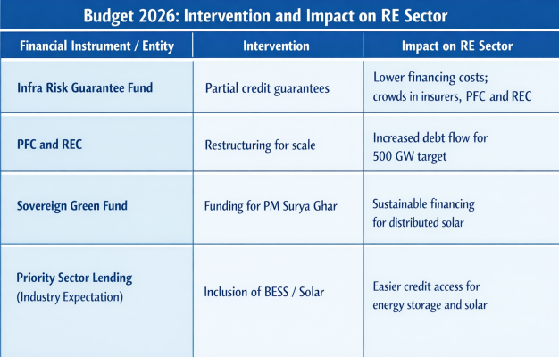
Transmission and Distribution: Building the Electron Highways
The physical evacuation of renewable power from resource-rich but remote areas like Rajasthan and Gujarat remains a critical bottleneck. Generating green power is only half the battle; it must be transmitted efficiently to urban and industrial consumption centers.
Green Energy Corridors (GEC)
The budget continues to allocate substantial funds for transmission expansion, with ₹599 crore earmarked for the Green Energy Corridor (GEC) Phase II in the 2026-27 financial year. Phase II targets the construction of 10,750 ckm of intra-state transmission lines and substations with a capacity of 27,500 MVA, facilitating the evacuation of approximately 24 GW of renewable energy by 2026. The GEC is fundamental to maximizing the utilization of large-scale assets, such as the solar parks in Khavda, Gujarat, and preventing power curtailment due to grid congestion.
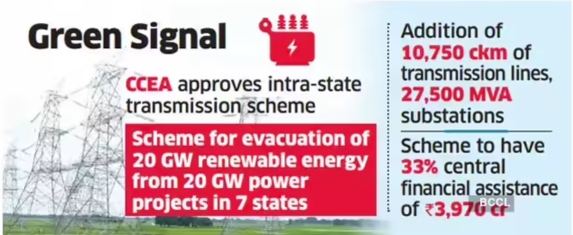
Distribution Reforms and Discom Health
The health of the distribution sector is the anchor of the entire energy transition. Discoms recorded their first collective profit in a decade in FY25 (₹2,701 crore), largely due to smart metering and performance-linked funding under the Revamped Distribution Sector Scheme (RDSS). Budget 2026 incentivizes further reforms by offering states additional borrowing limits (0.5% of GSDP) linked to performance in reducing Aggregate Technical and Commercial (AT&C) losses.
Smart metering has surged from 4,000 to 115,000 daily installations, a move that is essential for cutting power theft and enabling peak-load management. However, discoms still carry accumulated losses of ₹6.47 trillion, and the budget must address the fundamental challenge of cross-subsidization, where industrial and commercial tariffs are jacked up to cover free power for agriculture. Until the distribution sectors politics and pricing are aligned with the actual cost of supply, renewable developers will continue to face payment uncertainty and limbo PPAs.
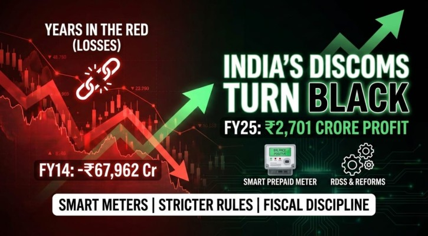
Synthesis: A Coordinated Roadmap to 2030
The Union Budget 2026-27 represents a strategic pivot for India, moving from an era of ease of doing business to speed of doing business in the energy sector. By shifting focus from capacity creation alone to building a dispatchable and resilient energy system, the budget provides the necessary building blocks for the 500 GW target.